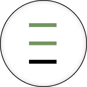

Guia do Design System
Referência única de marca, fundamentos visuais, componentes e telas para os três produtos da Valen Brasil: o website institucional, o blog e o painel interno de gestão de laudos.
Valen Brasil Gestão Empresarial Ltda. Avaliação imobiliária em Itajaí, Santa Catarina, desde 2020. Equipe de arquitetos, engenheiros e corretores.
Tailwind + shadcn/ui. Contrato canônico de variáveis, escala de espaçamento Tailwind, ícones Lucide.
O sistema é exclusivamente claro. Não existe tema escuro nem seção de fundo escuro em nenhum produto.
Logo e uso
Dois arquivos, nunca redesenhados: o lettering completo e o selo circular.

Sobre quais fundos
Regras
Nunca redesenhe, recrie em SVG/CSS, nem aproxime o lettering com outra fonte. Use sempre o arquivo de assets/.
Nunca aplique fundo colorido atrás do lettering, nem recorte o respiro interno da marca.
Tamanho mínimo do selo: 16px. Abaixo disso as três barras deixam de ser legíveis.
Não gire, não distorça a proporção, não troque o verde por outra cor.
Conteúdo e tom
Português do Brasil. Técnico, sóbrio e tranquilizador — vende segurança e responsabilidade técnica, nunca urgência.
- “Contamos com uma equipe multidisciplinar.” — a empresa fala em nós.
- “Descubra o valor do seu imóvel.” — o cliente é você.
- “Entrega em 3 dias úteis.” — prazos e preços concretos.
- “Laudo de Avaliação Completo”, “NBR 14653”, “RRT/ART” — termos técnicos com maiúscula.
- CTA no imperativo curto: “Solicite sua avaliação”.
- Nada de “eu” — a marca nunca fala na primeira pessoa do singular.
- Nada de urgência artificial: “imperdível”, “últimas vagas”, contagem regressiva.
- Nada de exclamação em copy de produto.
- Nada de emoji, em nenhum produto.
- Nada de promessa sem número: “rápido”, “o melhor preço”.
Estrutura padrão de seção
eyebrow de uma palavra em caixa alta → título curto em capitalização de frase → subtítulo em minúsculas que continua a frase
Cores
Verde sage #73945F e cinza #C8CBC6 foram extraídos pixel a pixel do logo. Todo o resto deriva deles.
Verde sage — a cor da marca
--primary = 500 · hover = 600 · texto verde = 700 · fundo de destaque = 50
Neutros
texto 900 forte / 700 corpo / 500 secundário · borda 200 sutil / 300 controle · fundo alternado 50
Semânticas
As três superfícies permitidas
--surface-page · fundo padrão
--surface-subtle · seção alternada
--surface-contrast · destaque
Contraste: o verde 500 sobre branco não atinge AA para texto pequeno. Texto verde usa sempre o 700; o 500 fica para fundo de botão (com texto branco), ícones e elementos gráficos.
Tipografia
Jost para títulos, Manrope para leitura e interface, JetBrains Mono para dados técnicos.
Descubra o valor do seu imóvel com a visão completa de arquitetos, engenheiros e corretores.
CAU PJ69468-1 · CRECI 11689-J
NBR 14653 · R$ 1.700,00
Escala
| Token | Tamanho | Uso | Amostra |
|---|---|---|---|
--text-6xl | 3.75rem | Display de hero | Valen |
--text-5xl | 3rem | H1 de página | Valen |
--text-4xl | 2.25rem | H2 de seção | Valen |
--text-2xl | 1.5rem | H3, título de painel | Valen |
--text-xl | 1.25rem | H4, título de card | Valen |
--text-base | 1rem | Corpo | Valen |
--text-sm | 0.875rem | Interface, rótulos, tabela | Valen |
--text-xs | 0.75rem | Eyebrow em caixa alta | Valen |
Espaçamento e grid
Escala Tailwind: 1 unidade = 0,25rem. Container de 1200px, gutter de 1,5rem, seções verticais de 6rem.
| Token | Valor | Uso |
|---|---|---|
--container-max | 1200px | Largura do site e do dashboard |
--container-narrow | 720px | Coluna de leitura |
--gutter | 1.5rem | Respiro lateral |
--section-y | 6rem | Respiro vertical entre seções |
--control-h-sm/md/lg | 2 / 2.5 / 3rem | Altura de botões e campos |
Forma, sombra e movimento
Raios
Elevação
Movimento e estados
| Situação | Duração | Comportamento |
|---|---|---|
| Cor de controle | 120ms | Botão sólido escurece um passo (500 → 600) |
| Hover / toggle | 200ms | Card clicável sobe 2px e ganha sombra md |
| Accordion, modal | 320ms | “+” gira 45° para virar “×” |
| Entrada de seção | 600ms | Fade suave, sem deslocamento grande |
| Press | 120ms | scale(0.985), sem mudança de cor |
| Foco | — | Borda --ring + anel de 3px a 28% |
| Desabilitado | — | opacity: .45, cursor not-allowed |
Easing padrão --ease-out = cubic-bezier(.16,1,.3,1). Sem bounce, sem elástico, sem parallax.
Iconografia
Lucide, o set padrão do shadcn. Traço 2px, colorido por currentColor. Nunca cole SVG à mão; use o componente Icon.
Core
Button, IconButton, Badge, Tag, Card, Separator, Avatar, StatCard.
Formulários
Rótulo sempre acima do campo — nunca placeholder no lugar de rótulo.
Feedback
Aviso inline, notificação, progresso e modal. Fundo tonal, nunca borda colorida à esquerda.
Dados
Tabela e accordion.
Website institucional
valenbrasil.com — hero, garantias, tipos de avaliação, aplicações, processo, equipe, história, blog, FAQ e chamada final.
Blog
blog.valenbrasil.com — feed com destaque, últimos artigos filtráveis, seções por tag e página de artigo.
Dashboard
Painel interno de gestão de laudos: visão geral, lista com filtros, detalhe do processo, agenda de vistorias e login.
Handoff para desenvolvedores
Next.js + Tailwind + shadcn/ui. Tudo o que é preciso para começar um projeto novo está nesta página.
1. Inicializar o projeto
pnpm dlx shadcn@latest init --preset b3acDp3htA --template next
O ID de preset b3acDp3htA não é resolvível publicamente — ver Pendências. O sistema foi escrito contra o contrato canônico de variáveis do shadcn (--background, --primary, --border etc.), não contra esse preset. Se ele não resolver, rode pnpm dlx shadcn@latest init --template next sem --preset e compare o globals.css gerado com o desta página antes de substituir: os nomes de variável devem bater.
2. Trocar o globals.css
Substitua o app/globals.css gerado pelo arquivo abaixo. Ele mantém todo o contrato do shadcn e só troca os valores pelos da marca. Não há bloco .dark — de propósito.
3. Instalar os ícones
pnpm add lucide-react
O componente Icon resolve ícones do Lucide por nome (name="arrow-right"). Na versão de referência isso é feito via mask-image apontando para assets/icons/, que acompanha o repositório — bom para os kits desta página, sem depender de rede. Num projeto Next.js real, troque a implementação para renderizar o componente do lucide-react (um mapa { "arrow-right": ArrowRight, … }), mantendo a mesma prop name.
4. Copiar tokens e componentes
tokens/ pode ficar como está e ser importado pelo styles.css, ou ter os valores absorvidos direto no globals.css — já feito abaixo para as variáveis do contrato shadcn. components/ deve ser copiado preservando as subpastas (core, data, feedback, forms, navigation): os imports relativos entre arquivos continuam funcionando sem alteração. Cada componente traz um .d.ts com o contrato de props e um .prompt.md descrevendo o uso para agentes de código.
5. Assets de marca
Copie assets/valen-logo.png (lettering) e assets/valen-icone.png (selo) preservando os nomes — são os que o componente Logo usa por padrão. Se a pasta ficar em outro caminho, passe o prefixo pela prop base em vez de renomear.
Regras não negociáveis
Somente superfícies claras. Não crie .dark, não use neutral-900 como fundo de seção. Para destacar, bg-sage-50 com texto text-sage-800.
Verde é acento, não fundo: botão primário, ícones, links, badges, progresso, estado ativo de navegação.
Máximo dois fundos por página, mais o verde-claro pontual.
Cards: branco, borda 1px, raio 12px, sombra mínima. Sem gradiente, sem borda colorida só à esquerda.
Sem emoji, sem ilustração vetorial desenhada à mão, sem imagem gerada.
Logo sempre do arquivo original.
Conteúdo em pt-BR, “nós” para a empresa e “você” para o cliente.
Onde está cada coisa
| Arquivo | Conteúdo |
|---|---|
styles.css | Ponto de entrada único; só @imports |
tokens/ | colors, typography, spacing, radius, shadows, motion, fonts, base |
components/ | 27 primitivas — .jsx + .d.ts (contrato de props) + .prompt.md |
ui_kits/ | website, blog, dashboard (+ login) — HTMLs interativos |
handoff/ | README.md e globals.css prontos para o projeto Next |
readme.md | Guia completo: contexto, conteúdo, fundamentos, iconografia, índice |
globals.css completo
Cole no lugar do app/globals.css gerado pelo shadcn. São as mesmas variáveis dos tokens desta página, no formato que o Tailwind espera.
Ver o arquivo inteiro — 197 linhas
/*
globals.css — Valen Brasil Design System
Substitua o app/globals.css gerado pelo `shadcn init` por este arquivo.
Mantém o contrato de variáveis do shadcn/Tailwind (mesmos nomes que o CLI
gera) e troca apenas os valores pelos da marca, extraídos de template.html.
Depois de colar este arquivo:
1. rode `pnpm add lucide-react` (ícones)
2. copie tokens/ e components/ deste repositório para o projeto Next
3. importe as fontes (ver bloco @import abaixo, igual a tokens/fonts.css)
Regra número 1 do sistema: SOMENTE modo claro. Não existe bloco `.dark`
aqui de propósito — não crie um.
*/
@import url("https://fonts.googleapis.com/css2?family=Jost:wght@200..700&family=Manrope:wght@400..800&family=JetBrains+Mono:wght@400;500&display=swap");
@tailwind base;
@tailwind components;
@tailwind utilities;
@layer base {
:root {
/* --- Marca: verde sage extraído do logo (#73945F) --- */
--sage-50: #f4f7f1;
--sage-100: #e7ede2;
--sage-200: #cfdcc6;
--sage-300: #b2c6a4;
--sage-400: #93ae81;
--sage-500: #73945f;
--sage-600: #5e7c4c;
--sage-700: #4a633c;
--sage-800: #3a4e30;
--sage-900: #2c3a25;
/* --- Neutros: cinza levemente esverdeado (#C8CBC6 do logo = 300) --- */
--neutral-0: #ffffff;
--neutral-50: #fafaf9;
--neutral-100: #f3f4f2;
--neutral-200: #e6e8e4;
--neutral-300: #c8cbc6;
--neutral-400: #a6aaa4;
--neutral-500: #82867f;
--neutral-600: #61645e;
--neutral-700: #464843;
--neutral-800: #2b2d29;
--neutral-900: #141613;
--neutral-950: #0a0b09;
/* --- Semânticas --- */
--success-50: #eef7f0;
--success-500: #3f8b57;
--success-700: #2c6640;
--warning-50: #fbf4e8;
--warning-500: #b5822b;
--warning-700: #8a611c;
--danger-50: #fbeeed;
--danger-500: #b3453c;
--danger-700: #8a332c;
--info-50: #eef2f7;
--info-500: #4a6b8a;
--info-700: #35506b;
/* --- Contrato canônico shadcn/Tailwind --- */
--background: var(--neutral-0);
--foreground: var(--neutral-900);
--card: var(--neutral-0);
--card-foreground: var(--neutral-900);
--popover: var(--neutral-0);
--popover-foreground: var(--neutral-900);
--primary: var(--sage-500);
--primary-foreground: #ffffff;
--secondary: var(--neutral-100);
--secondary-foreground: var(--neutral-900);
--muted: var(--neutral-100);
--muted-foreground: var(--neutral-500);
--accent: var(--sage-50);
--accent-foreground: var(--sage-700);
--destructive: var(--danger-500);
--destructive-foreground: #ffffff;
--border: var(--neutral-200);
--input: var(--neutral-300);
--ring: var(--sage-500);
--chart-1: var(--sage-500);
--chart-2: var(--sage-300);
--chart-3: var(--neutral-700);
--chart-4: var(--sage-700);
--chart-5: var(--neutral-400);
--sidebar: var(--neutral-50);
--sidebar-foreground: var(--neutral-700);
--sidebar-primary: var(--sage-500);
--sidebar-primary-foreground: #ffffff;
--sidebar-accent: var(--sage-50);
--sidebar-accent-foreground: var(--sage-700);
--sidebar-border: var(--neutral-200);
--sidebar-ring: var(--sage-500);
/* --- Aliases de leitura (não fazem parte do contrato shadcn, mas são
usados pelos componentes deste design system) --- */
--text-strong: var(--neutral-900);
--text-body: var(--neutral-700);
--text-muted: var(--neutral-500);
--text-on-brand: #ffffff;
--text-brand: var(--sage-600);
--surface-page: var(--neutral-0);
--surface-subtle: var(--neutral-50);
--surface-card: var(--neutral-0);
--surface-contrast: var(--sage-50);
--surface-brand: var(--sage-500);
--surface-brand-subtle: var(--sage-50);
--border-subtle: var(--neutral-200);
--border-strong: var(--neutral-300);
--border-brand: var(--sage-500);
--overlay: rgba(20, 22, 19, .55);
/* --- Tipografia --- */
--font-display: "Jost", "Helvetica Neue", Arial, sans-serif;
--font-sans: "Manrope", "Helvetica Neue", Arial, sans-serif;
--font-mono: "JetBrains Mono", ui-monospace, monospace;
/* --- Forma --- */
--radius: 0.5rem;
--radius-sm: calc(var(--radius) - 2px);
--radius-md: var(--radius);
--radius-lg: calc(var(--radius) + 4px);
--radius-xl: calc(var(--radius) + 8px);
--radius-2xl: 1.25rem;
--radius-full: 9999px;
--radius-card: 0.75rem;
--radius-control: 0.5rem;
--radius-pill: 9999px;
}
/*
Sem bloco `.dark`. O sistema é exclusivamente claro — não crie
`.dark`, não use neutral-900 como fundo de seção. Para destacar,
use bg-sage-50 com texto text-sage-800.
*/
* {
border-color: var(--border);
}
body {
background: var(--surface-page);
color: var(--text-body);
font-family: var(--font-sans);
}
}
/*
@theme inline — mapeamento opcional para Tailwind v4 (utilitários como
bg-primary, text-foreground, rounded-card passam a funcionar direto).
Em Tailwind v3 com tailwind.config, mapeie as mesmas variáveis em
theme.extend.colors / theme.extend.borderRadius em vez deste bloco.
*/
@theme inline {
--color-background: var(--background);
--color-foreground: var(--foreground);
--color-card: var(--card);
--color-card-foreground: var(--card-foreground);
--color-popover: var(--popover);
--color-popover-foreground: var(--popover-foreground);
--color-primary: var(--primary);
--color-primary-foreground: var(--primary-foreground);
--color-secondary: var(--secondary);
--color-secondary-foreground: var(--secondary-foreground);
--color-muted: var(--muted);
--color-muted-foreground: var(--muted-foreground);
--color-accent: var(--accent);
--color-accent-foreground: var(--accent-foreground);
--color-destructive: var(--destructive);
--color-destructive-foreground: var(--destructive-foreground);
--color-border: var(--border);
--color-input: var(--input);
--color-ring: var(--ring);
--color-chart-1: var(--chart-1);
--color-chart-2: var(--chart-2);
--color-chart-3: var(--chart-3);
--color-chart-4: var(--chart-4);
--color-chart-5: var(--chart-5);
--color-sidebar: var(--sidebar);
--color-sidebar-foreground: var(--sidebar-foreground);
--color-sidebar-primary: var(--sidebar-primary);
--color-sidebar-primary-foreground: var(--sidebar-primary-foreground);
--color-sidebar-accent: var(--sidebar-accent);
--color-sidebar-accent-foreground: var(--sidebar-accent-foreground);
--color-sidebar-border: var(--sidebar-border);
--color-sidebar-ring: var(--sidebar-ring);
--font-display: var(--font-display);
--font-sans: var(--font-sans);
--font-mono: var(--font-mono);
--radius-sm: var(--radius-sm);
--radius-md: var(--radius-md);
--radius-lg: var(--radius-lg);
--radius-xl: var(--radius-xl);
}
Pendências conhecidas
Fontes. Jost, Manrope e JetBrains Mono são aproximações do Google Fonts — os arquivos originais do site (Framer) não foram fornecidos. Com os WOFF2 reais, a troca é imediata em tokens/fonts.css.
Preset shadcn b3acDp3htA. O ID não é resolvível publicamente; o sistema foi escrito contra o contrato canônico do shadcn. Comparar com o globals.css gerado no primeiro projeto real.
Repositórios vazios. valen-design e valen-blog só têm README — nenhum valor foi derivado de código. Website e blog são reconstruções fiéis de conteúdo, não cópias pixel-perfect.
Dashboard. Não existe produto correspondente hoje; o fluxo de gestão de laudos é composição original e precisa de validação da operação.